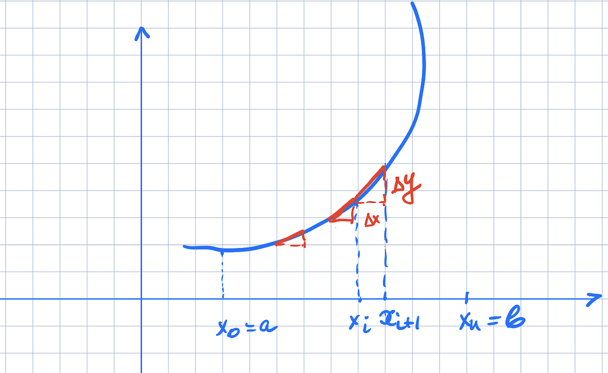
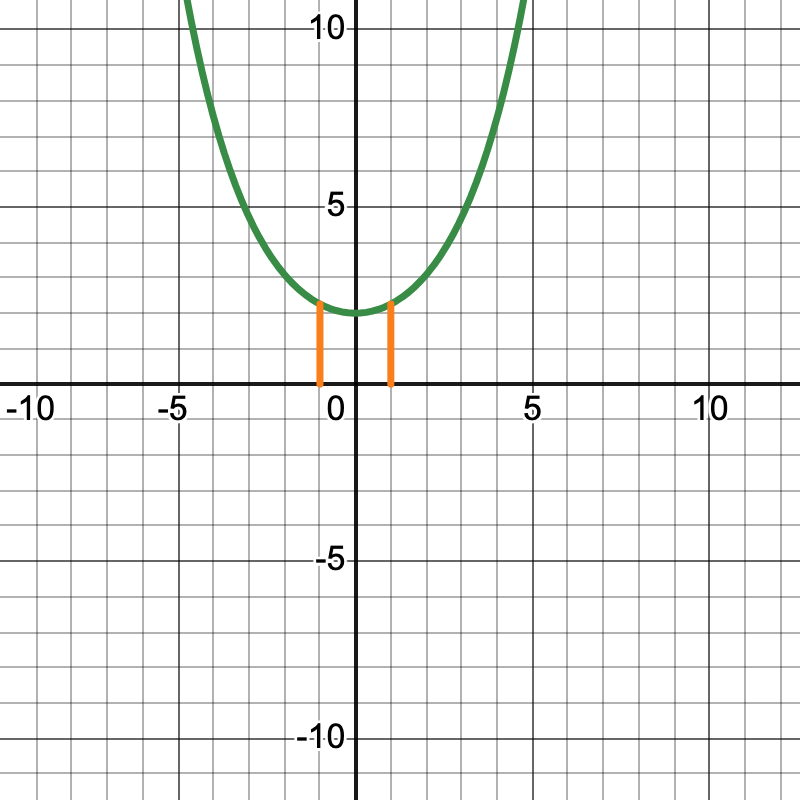
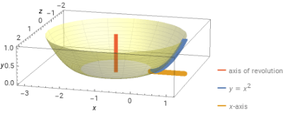

Our next application of integration comes from arc length. The concept of arc length is fairly simple: if we follow along the path of a curve, how much are we actually moving? That is, if we are in a car, driving along a path, how many miles are we actually putting on our car? Not the “straight-line distance” between our starting and ending points, but the actual, total amount we are driving.
Suppose our path is the graph of a function \(y=f(x)\) between two points \(x=a\) and \(x=b\). We can estimate the length of our path by splitting up that interval into \(n\) equally spaced line segments, calling the endpoints \(x_0, x_1, \ldots, x_n\).

The distance between two consecutive points on the curve is given by the distance formula:\(d = \sqrt{(\Delta x)^2 + (\Delta y)^2}\). So the total length of the curve is approximated as \[s \approx \sum_{i=1}^n \sqrt{(\Delta x)^2 + (\Delta y)^2}\]
(We use \(s\) as our “arc length” variable.) As \(n \rightarrow \infty\), these approximations become better and better. It’s not clear, though, what the integral ends up being, so we need to do a bit more algebra first. If we want to end up with an integral, we need \(\Delta x\) by itself (outside of the square root), so let’s factor that out:\[\sqrt{(\Delta x)^2 + (\Delta y)^2} = \sqrt{(\Delta x)^2 (1 + \Big(\frac{\Delta y}{\Delta x}\Big)^2)}\] Then we can take the square root of \((\Delta x)^2\), and we get \[s \approx \sum_{i=1}^n \sqrt{1 + \Big(\frac{\Delta y}{\Delta x}\Big)^2} \Delta x\] Now as \(n \rightarrow \infty\), the \(\sum \rightarrow \int\), \(\frac{\Delta y}{\Delta x} \rightarrow f^\prime(x)\), and \(\Delta x \rightarrow dx\), and so we get our integral \[s = \int_a^b \sqrt{1 + (f^\prime(x))^2} dx\] Example Here we go through an example of finding the arc length of the “quarter circle” given by \(y = \sqrt{1 - x^2}\) from \(x=0\) to \(x=1\). First we need to compute \(\sqrt{1 + (f^\prime(x))^2}\). So we compute \(f^\prime(x)\) using the power rule and chain rule: \[f^\prime(x) = \frac{-2x}{2\sqrt{1 - x^2}} = -\frac{x}{1 - x^2}\]. Then \((f^{\prime}(x))^2 = \frac{x^2}{1 - x^2}\).Then we need to see what \(1 + (f^\prime)^2\) is. So we add 1 to the above: \[1 + \frac{x^2}{1 - x^2} = \frac{(1 - x^2) + x^2}{1 - x^2}\] which is just \(\frac{1}{1 - x^2}\). Now we can integrate: \[s =\displaystyle \int_0^1 \frac{1}{\sqrt{1-x^2}} dx\] If you don’t recognize this (I don’t blame you), it’s an Inverse Trig integral. This turns out to be \(\left.\arcsin(x)\right|_0^1\), or just \(\arcsin(1) - \arcsin(0)\). Since \(\sin(\pi/2) = 1\), \(\arcsin(1) = \pi/2\).And since \(\sin(0)=0\), \(\arcsin(0)=0\). So our answer is \(\frac{\pi}{2}-0\) or just \(\frac{\pi}{2}\). Can you do the sanity check using geometry?
Exercises Take a look at Exercises 165-167, 171-175 in the textbook to practice these. You may wish to use a calculator to estimate these integrals. There are several available online, including WolframAlpha and SymboLab.
Consider a curve \(f(x)=a\frac{e^{x/a}+e^{-x/a}}{2}\), where \(a\) is a constant. Such curves are called catenaries. The word catenary is derived from the Latin word catēna, which means chain. This curve has interesting properties. If you calculate the area under the curve between any two points and the arc length between the same points, their ratio will be constant and equal to a. We will verify that. Assume that \(a=2\), \(x_0=-1\), and \(x_1=1\), then \(f(x)=e^{x/2}+e^{-x/2}\). The area under the curve is \(A=\displaystyle \int_{-1}^1\Big(e^{x/2}+e^{-x/2}\Big) dx\). Then \(A=2\Big(e^{x/2}-e^{-x/2}\Big)\Big|_{-1}^1=2\Big(e^{1/2}-e^{-1/2}-\Big(e^{-1/2}-e^{1/2}\Big)\Big)\) or \(A=4\Big(e^{1/2}-e^{-1/2}\Big)\).
To calculate the length of the arc between the points \(x_0=-1\) and \(x_1=1\),we need to do some algebra. First, we calculate the deravative of the catenary, \[f^{\prime}(x)=\frac{1}{2}e^{x/2}-\frac{1}{2}e^{x/2}\] Now we square the derivative \[\Big(f^{\prime}(x)\Big)^2=\Big(\frac{1}{2}e^{x/2}-\frac{1}{2}e^{x/2}\Big)^2=\frac{1}{4}(e^x -1-1+e^{-x})=\frac{1}{4}(e^x+e^{-x}-2)\] Adding a \(1\) to the square the derivative gives us: \[\Big(f^{\prime}(x)\Big)^2+1=\frac{1}{4}(e^x+e^{-x}-2)+1\] Bringing the expression above to the common denominator, we get \[\Big(f^{\prime}(x)\Big)^2+1=\frac{1}{4}(e^x+e^{-x}+2)\] Now it is time to do some (educated) guesses. Calculating the \(\Big(f^{\prime}(x)\Big)^2\) we showed that \[\Big(\frac{1}{2}e^{x/2}-\frac{1}{2}e^{x/2}\Big)^2=\frac{1}{4}(e^x+e^{-x}-2)\] It is reasonable to assume that \[\frac{1}{4}(e^x+e^{-x}+2)=\Big(\frac{1}{2}e^{x/2}+\frac{1}{2}e^{x/2}\Big)^2\] I am leavind for you to verify this fact algebraically. Finally, the arc length \[s=\displaystyle \int_{-1}^1\sqrt{\Big(\frac{1}{2}e^{x/2}+\frac{1}{2}e^{x/2}\Big)^2 }dx\] Since under the integral we are taking a square root of a perfect square they annyhilate each other and the arclength becomes \(s=\displaystyle \int_{-1}^1\Big(\frac{1}{2}e^{x/2}+\frac{1}{2}e^{-x/2}\Big) dx=\frac{1}{2}\displaystyle \int_{-1}^1\Big(e^{x/2}+e^{-x/2}\Big) dx=\frac{A}{2}\).In other words, the ratio the area under the catinary between any two points and the arc length between the same points stays constant. Below is the graph of our catinary.

Catenary curves are the curves formed by a hanging chain supported on its ends. Catenary curves are often found in suspension bridges. Here is one of those bridges:
If you ever go to Spain, you may see catenary arches in some of the architecture of the Spanish architect Antoni Gaudi. Catenary arches have the ability to support large amounts of weight while being constructed from relatively light material.
As an exercise, compute the arc length from \(x=-1\) to \(x=1\) of the catenary curve given by: \[f(x) = 10 \frac{e^{\frac{x}{10}} + e^{-\frac{x}{10}}}{2}\] Use a calculator (graphing or online) to estimate your answer as well as the answer to the example we did above. You may be surprised to see that as \(a\) increases, the arc length of the catenary curve decreases!
What happens if we revolve a region around a line that’s not the \(x\) or \(y\)-axis? For example, what if we revolve the region bounded above by \(y=x^2\), below by the \(x\)-axis, to the left by \(x=0\) and to the right by \(x=1\)
around the line \(x=-1\)?

If we take any vertical slice of this region, revolving it around the line \(x=-1\), we will still give us a cylindrical shell, so our volume should still be \(V = \int_a^b 2\pi r h dx\). In this case, however, the radius is given by \(x+1\), since the distance from a point \(x\) and the line \(x=-1\) is \(x+1\). So we set up the integral: \[V = \displaystyle\int_0^1 2\pi (x+1) x^2 dx\] We can pull out the \(2\pi\) and distribute: \[V = 2\pi \displaystyle \int_0^1 (x^3 + x^2) dx\] Now integrate: \[V = 2\pi \left.(\frac{x^4}{4} + \frac{x^3}{3})\right|_0^1\] Plugging in the endpoints, the volume of this region is \(2\pi (\frac{7}{12})\), or \(\frac{7\pi}{6}\).
So, we actually have 6 formulas:
\(V = \int_a^b \pi (f(x)^2) dx\)
\(V = \int_a^b \pi (g(y)^2) dy\)
\(V = \int_a^b 2\pi x f(x) dx\)
\(V = \int_a^b \pi (f(x)^2 - g(x)^2) dx\)
\(V = \int_a^b \pi (g(y)^2 - h(y)^2) dy\)
\(V = \int_a^b 2\pi y g(y) dy\)
Consider the following problems:
Revolve the region bounded by \(y=x\), \(y=x^2\), \(x=0\) and \(x=1\) around the \(x\)-axis.
Revolve the region bounded by, \(y=x^2\), \(x=0\), \(x=2\) and \(y=4\) around the \(y\)-axis.
Revolve the region bounded by \(y=x^2\), \(x=0\), \(x=2\) and \(y=0\) around the \(y\)-axis.
In small groups: for each problem
Pick the method you will use for this problem.
Pick the formula you will use for the problem.
Solve one of the problems.
Pick one student to present your problem on one of the boards.